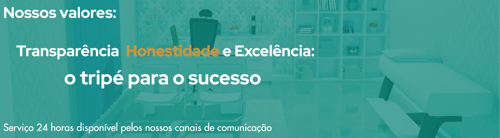

<header>
    <h1 class="logo"></h1>
    <input type="checkbox" id="nav-toggle" class="nav-toggle">
    
    <nav>
      <ul>
        <li><a href="#">Home</a></li>
        <li><a href="#">Galeria</a></li>
        <li><a href="#">Login</a></li>
      </ul>
    
    </nav>

    <label for="nav-toggle" class="nav-toggle-label">
      <span></span>
    </label>

    <link rel="stylesheet" href="hoome.css">

  </header>
  
  <br>
  <br>
  <br>
  <br>
  <br> 

<!-- Slideshow container -->
<div class="slideshow-container">

    <!-- Full-width images with number and caption text -->
    <div class="mySlides fade">
      <div class="numbertext">1 / 3</div>
      
        <!-- The dots/circles -->
        <div id="dotz" style="text-align:center">
            <span class="dot" onclick="currentSlide(1)"></span>
            <span class="dot" onclick="currentSlide(2)"></span>
            <span class="dot" onclick="currentSlide(3)"></span>
        </div>
    </div>
  
    <div class="mySlides fade">
      <div class="numbertext">2 / 3</div>
      
        <!-- The dots/circles -->
        <div id="dotz" style="text-align:center">
            <span class="dot" onclick="currentSlide(1)"></span>
            <span class="dot" onclick="currentSlide(2)"></span>
            <span class="dot" onclick="currentSlide(3)"></span>
        </div>
    </div>
  
    <div class="mySlides fade">
      <div class="numbertext">3 / 3</div>
      
        <!-- The dots/circles -->
        <div id="dotz" style="text-align:center">
            <span class="dot" onclick="currentSlide(1)"></span>
            <span class="dot" onclick="currentSlide(2)"></span>
            <span class="dot" onclick="currentSlide(3)"></span>
        </div>
    </div>
  
    <!-- Next and previous buttons -->
    <a class="prev" onclick="plusSlides(-1)">&#10094;</a>
    <a class="next" onclick="plusSlides(1)">&#10095;</a>
  </div>
  <br>
  
  <nav>
    
    <ul id="Sobre">A Clínica KabaDor é uma instituição respeitada no meio belo-horizontino desde o final da década de 70, quando o seu fundador Eli Kabador, migrado da Palestina, realizou seu sonho em terras mineiras. Desde o seu falecimento, em 2006, a clínica tem sido administrada sob cuidados de seu filho, Ken Kabador, que tem focado seus esforços nos ramos da oftalmologia, pediatria e espuculostalgia e reafirmando a condição de respeito e admiração que a clínica possui na capital mineira.</ul>
  </nav>


  <footer>
    <script src="hoome.js"></script>
  </footer>